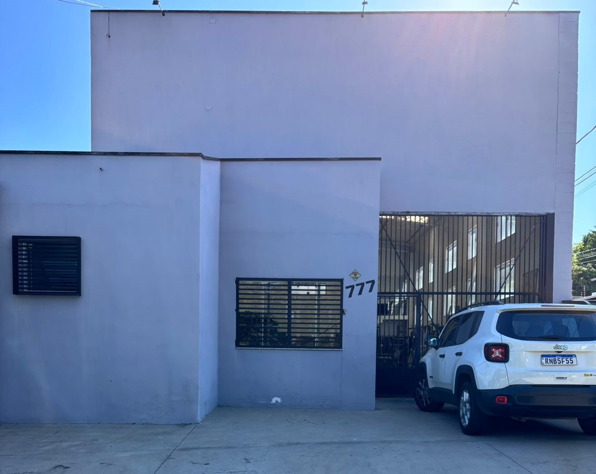

Sobre Nós

Nossa História
A ALUMIN nasceu da paixão por qualidade e inovação no setor de esquadrias de alumínio. Fundada com o compromisso de oferecer produtos que combinam durabilidade, estética e funcionalidade, nossa empresa rapidamente se tornou referência no mercado.
Ao longo dos anos, investimos constantemente em tecnologia, capacitação profissional e processos de fabricação que garantem a excelência em cada projeto que realizamos. Nossa trajetória é marcada pelo compromisso com a satisfação do cliente e pela busca contínua de aperfeiçoamento.
Nossa Missão
Na ALUMIN, nossa missão é entregar exatamente o que o cliente precisa, com rapidez, comprometimento e um atendimento que supera expectativas. Buscamos transformar espaços através de soluções em esquadrias que combinam qualidade superior, design moderno e funcionalidade.
Localizada em uma região estratégica, nossa empresa conta com uma estrutura moderna e profissionais altamente capacitados, prontos para transformar projetos em realidade. Trabalhamos com matéria-prima de alta qualidade, tecnologia de ponta e foco total na satisfação do cliente.
Nossos Valores
Excelência
Buscamos a perfeição em cada detalhe, desde o primeiro contato até a instalação final.
Compromisso
Honramos nossos prazos e promessas, construindo relações de confiança duradouras.
Inovação
Estamos sempre em busca de novas tecnologias e soluções para melhorar nossos produtos.
Sustentabilidade
Comprometidos com práticas responsáveis que minimizam o impacto ambiental.
Diferenciais
Na ALUMIN, cada projeto é único. Oferecemos soluções sob medida para residências, comércios e indústrias, sempre buscando a melhor relação custo-benefício, segurança e beleza para o seu espaço.
Nosso diferencial está no atendimento personalizado, na agilidade das entregas e no acompanhamento próximo de cada etapa do seu projeto. Da escolha dos materiais à instalação final, garantimos transparência, suporte técnico e pós-venda eficiente.
Produtos e Serviços
Contamos com uma ampla linha de produtos: janelas, portas, fachadas, guarda-corpos, vitrôs, portões e muito mais. Tudo feito para valorizar seu imóvel, agregar conforto, praticidade e design moderno.
Nossos serviços incluem:
- Desenvolvimento de projetos personalizados
- Fabricação de esquadrias sob medida
- Instalação profissional
- Manutenção e assistência técnica
- Consultoria especializada
Venha conhecer a ALUMIN! Temos orgulho de fazer parte de grandes histórias, realizando sonhos e construindo parcerias duradouras. Confie em quem entende do assunto, confie na ALUMIN!
Transforme seu espaço com a ALUMIN
Entre em contato conosco e descubra como podemos ajudar a realizar seu projeto com qualidade e excelência.
Solicite um Orçamento